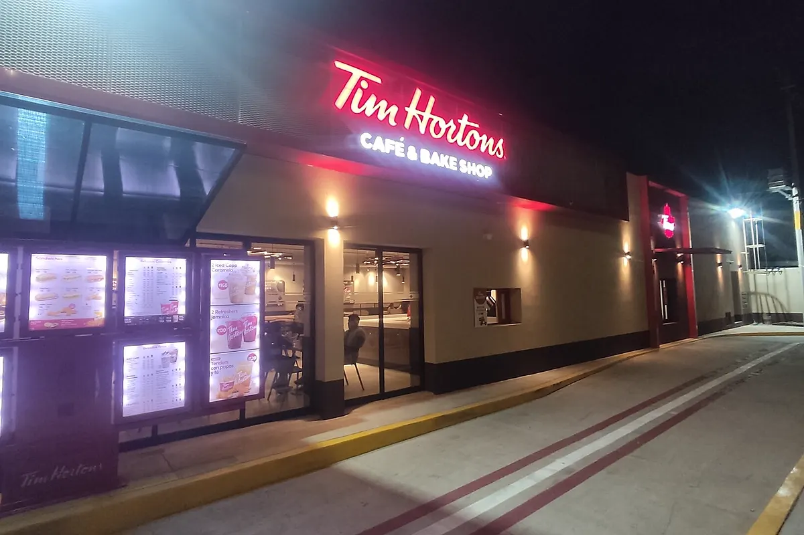

- Probabilidad a 3 años
- —
- Utilidad mensual
- —
- Punto de equilibrio
- —

COATL — Cálculo de Oportunidad y Análisis Territorial Local — estima la probabilidad de éxito y la rentabilidad esperada de un negocio en Coacalco de Berriozábal, Estado de México, combinando datos oficiales del INEGI e IGECEM con un modelo logístico, tablas de supervivencia empresarial y simulación Monte Carlo.
Coacalco proviene del náhuatl Cōācalco, «en la casa de la serpiente». De ahí el nombre y la cenefa de este proyecto.
Experimenta antes de leer
Dos atajos al simulador. Ambos usan el mismo motor que el resto de la página (misma semilla y mismas fórmulas): lo que ves aquí es lo que verás al abrirlo.

Color = P a 3 años de este negocio en cada zona. Límites: 70 AGEB urbanas del INEGI (Marco Geoestadístico 2025); su agrupación en seis zonas es del equipo.
Tu opinión
Cuéntanos en un minuto qué te sirvió y qué mejorarías. Tu opinión llega directo al equipo por correo: A660136406@my.uvm.edu.mx.
El territorio en cifras
Antes de modelar probabilidades hay que conocer la población de estudio. Estos indicadores oficiales —tomados del Censo 2020 del INEGI, del portal de datos económicos del municipio (IGECEM/DENUE) y de la medición municipal del CONEVAL— describen el tamaño del mercado, su tejido empresarial y su poder de compra, y son los parámetros base que alimentan al simulador.
Unidades económicas registradas en Coacalco de Berriozábal. Crecimiento medio de 3.7% anual entre 2013 y 2020: más mercado, pero también más competencia.
Fuente: INEGI, DENUE 05/2026. Coacalco de Berriozábal, 11,554 establecimientos (descarga: 12-nov-2026). Es el directorio vigente; difiere de las 11,018 unidades de 2020 porque mide otro año con otra fuente.
Coacalco no es homogéneo: el corredor de la Vía José López Portillo concentra cinco centros comerciales y la mayor afluencia, mientras que las colonias habitacionales ofrecen rentas bajas y demanda de proximidad. El simulador asigna a cada zona un índice de afluencia y un costo de renta de referencia.
| Zona | Perfil | Índice de afluencia* | Renta de referencia | Costo de entrada |
|---|---|---|---|---|
| Corredor Vía López Portillo | Comercial regional, 5 centros comerciales | 1.35 | $280/m²·mes | Alto |
| San Francisco Coacalco (Centro) | Centro tradicional, comercio de barrio intenso | 1.15 | $170/m²·mes | Medio |
| Villa de las Flores · Parque Residencial · Bosques | Residencial de nivel medio-alto | 1.10 | $190/m²·mes | Medio |
| Los Héroes · Loma Bonita · Villa de las Manzanas | Residencial de nivel medio, alta densidad | 1.00 | $150/m²·mes | Medio |
| El Potrero · San Rafael · El Olivo | Popular, comercio de proximidad | 0.90 | $110/m²·mes | Bajo |
| Zonas habitacionales periféricas | Demanda local, flujo peatonal limitado | 0.78 | $90/m²·mes | Bajo |
* Índice relativo construido por el equipo (1.00 = promedio municipal) a partir de la caracterización socioeconómica de colonias del municipio y la concentración comercial del corredor López Portillo. Rentas: valores de referencia del mercado local; pueden editarse en el simulador.
Directorio Estadístico Nacional de Unidades Económicas
Conteos reales del DENUE del INEGI para las 32 entidades y todos sus municipios, sincronizados automáticamente con la descarga oficial. Se publican solo agregados: ningún nombre, dirección ni contacto.
El instrumento
Configura las 36 variables del escenario en las cuatro pestañas: el cálculo es en vivo, cada ajuste mueve al instante el medidor, las gráficas y el mapa de zonas. ¿Sin ideas? Lanza el dado de 🎲 Escenario sorpresa. El modelo devuelve la probabilidad (con un decimal, cálculo determinista y reproducible) de operar con rentabilidad al tercer año, la curva de supervivencia, la distribución de utilidades (Monte Carlo, 2,000 corridas) y los indicadores financieros del proyecto.
Aquí verás qué datos entendí y cuáles ajusté.
probabilidad estimada de que el negocio siga operando y sea rentable al tercer año
Configura y calculaCada cuadro = 1 escenario de cada 100.
Tu escenario frente al promedio nacional (riesgos proporcionales sobre la tabla INEGI). La banda muestra el rango plausible de P.
Histograma de 2,000 años simulados: choque anual de demanda, ruido mensual de clientes y ticket, y variación del costo variable. Líneas: P5, mediana y P95.
Ingresos vs. costos totales según clientes por día; el cruce marca el equilibrio.
Aporte de cada variable a z en el modelo logístico. Las barras rojas restan probabilidad; las granates la suman.
Guarda hasta 3 escenarios y compáralos lado a lado con las mismas métricas.
El enlace guarda todas las variables del formulario: quien lo abra verá exactamente tu escenario.
Tu mismo negocio, evaluado en las seis zonas de Coacalco con la renta de referencia y la afluencia de cada una. El color indica la probabilidad de éxito a 3 años. Haz clic en una zona (o en el ranking) para trasladar tu escenario ahí. Activa la capa satélite para ver la fotografía aérea real del municipio.
Mapa real: cartografía © colaboradores de OpenStreetMap · fotografía aérea © Esri y proveedores. Límites de AGEB urbanas: INEGI, Marco Geoestadístico (dic. 2025) y población del Censo 2020; la agrupación de AGEB en seis zonas es del equipo; los hitos comerciales se muestran con ubicación aproximada. Cada zona se evalúa con tu escenario actual ajustando renta de referencia y afluencia. Si no hay conexión, el ranking y el comparador conservan los mismos resultados.
Ranking de zonas para tu escenario
Mejora tu negocio
Ya sabes tu probabilidad; ahora muévela. Este apartado usa el mismo motor del simulador y lo que acabas de capturar para proponerte alternativas, revisar tu negocio en cinco niveles con un borrador a tu medida en cada punto, estimar tu carga fiscal y dibujar lo que tu negocio puede llegar a ser.
Para empresas
Sube el historial mensual de tu negocio y COATL proyecta tu año con tu variabilidad real en lugar de los supuestos del equipo. El archivo se lee solo en este navegador: no se envía a ningún servidor, no se guarda y desaparece al recargar o al pulsar «Borrar».
Columnas esperadas (una fila por mes, mínimo 6 meses):
| Columna | Ejemplo |
|---|---|
mes | 2025-01 |
ventas (MXN) | 185000 |
clientes (opcional) | 1950 |
costo_variable (MXN) | 70300 |
costos_fijos (MXN) | 27000 |
Estrategia en tiempo real
No basta con saber la probabilidad: hay que poder moverla. Este apartado lee tu escenario en vivo, lo clasifica en Fortalezas, Oportunidades, Debilidades y Amenazas, y construye un plan de acción priorizado. Cada estrategia muestra cuántos puntos de probabilidad ganarías —calculados volviendo a correr el modelo con esa mejora— y la evidencia real que la respalda.
Balance de tu escenario
Calculando…
Utilidad anual de los 2,000 años simulados con Monte Carlo: el pesimista (percentil 5), el esperado (mediana) y el optimista (percentil 95).
Lo que ya juega a tu favor (interno)
Palancas del entorno que puedes aprovechar (externo)
Lo que te resta y sí controlas (interno)
Riesgos del entorno que debes blindar (externo)
Los modelos detrás del número
El simulador encadena cinco herramientas vistas en el curso. Ninguna probabilidad sale «de la nada»: cada una se construye con un modelo explícito, parámetros documentados y datos oficiales como punto de anclaje.
La probabilidad de éxito a 3 años se obtiene con una función logística: cada variable del escenario aporta un coeficiente β (positivo si protege al negocio, negativo si lo arriesga) y la suma z se transforma en una probabilidad entre 0 y 1.
β₀ se calibró para que un escenario típico (comercio micro, zona media, sin ventajas ni desventajas) reproduzca la supervivencia nacional a 3 años de la tabla del INEGI 1989–2019 (42.6 %): β₀ = ln(0.4261/0.5739) ≈ −0.298. Los coeficientes de giro y zona se estimaron con datos reales: se siguió a 305,313 negocios que el INEGI incorporó al DENUE en la actualización censal de 2019 en el Estado de México (4,654 en Coacalco) hasta la edición de 2024, y se ajustó una regresión logística con errores estándar (efectos centrados y contraídos por Bayes empírico). El de formalidad se estimó con el panel de la ENOE del INEGI (5,245 dueños de negocios jóvenes seguidos un año). Experiencia, reserva de capital, marketing, deuda y las demás variables siguen siendo supuesto del equipo, porque ninguna fuente pública las liga con el cierre; el simulador muestra aparte la probabilidad con solo lo medido. La competencia cercana ya no suma a P, porque el coeficiente de zona ya refleja la densidad de negocios: afecta a los clientes esperados. Margen de seguridad, reserva y deuda juntos suman como máximo +0.35, porque miden casi lo mismo.
Horizontes. Cada fuente mide un plazo distinto y todo se lleva a 3 años: la tabla del INEGI ya es a 3 años; giro y zona (DENUE, 5 años) solo aportan diferencias entre categorías, y el nivel lo fija β₀; formalidad (ENOE, 1 año) se convierte con riesgos proporcionales, S₃ = S₀(3)HR.
¿Acierta? Se probó con 2,562 negocios de Coacalco que el modelo no usó para estimarse (giro estimado sin Coacalco; zona con validación cruzada de 5 grupos). A 5 años, COATL predijo en promedio 35.5 % y siguió el 50.6 %: el nivel está desfasado, en parte porque el directorio conserva negocios que ya cerraron. Para ordenar el riesgo, el AUC es 0.576 (0.5 = azar) y la puntuación de Brier, 0.2691, frente a 0.25 de un pronóstico constante. Giro y zona ordenan el riesgo apenas mejor que el azar: P orienta, no predice un negocio en particular.
Como varios β no tienen error estándar, el simulador no presenta P como cifra exacta: perturba cada βᵢ con una desviación relativa de 30 % (y β₀ con 0.15) en 1,000 sorteos y reporta el rango plausible P5–P95. Es sensibilidad, no un intervalo de confianza muestral.
Conceptos del curso: probabilidad condicional, función logística, variables explicativas.
El tabulado nacional del INEGI (1989–2019) indica que de cada 100 negocios que nacen en México, alrededor de 31 mueren antes de cumplir un año y unos 36 llegan a los 5 años. La esperanza de vida al nacer es de 8.4 años. La curva personalizada eleva la supervivencia nacional a un exponente h (razón de riesgo) derivado de tu probabilidad.
| Año | 1 | 2 | 3 | 5 | 7 | 10 |
|---|---|---|---|---|---|---|
| S₀(t) nacional | 0.691 | 0.481 | 0.426 | 0.357 | 0.311 | 0.263 |
Conceptos: probabilidad de supervivencia, frecuencia relativa, esperanza de vida.
La utilidad de un negocio no es fija. Cada corrida simula un año con cuatro fuentes de variación: un choque anual común de demanda F (lognormal de media 1 y σ = 0.15: un «mal año» afecta a los doce meses a la vez y no se compensa al sumar), clientes por día Normal(μF, (0.22·μF)²) mes a mes, ticket Normal(t̄, (0.08·t̄)²) y un costo variable que se desvía ±2 puntos porcentuales en el año. Repetimos el año 2,000 veces (números pseudoaleatorios de semilla fija, método Box–Muller) y reportamos la media, la dispersión, los escenarios P5 · mediana · P95 y la probabilidad empírica de terminar con utilidad positiva. Las desviaciones son supuestos del equipo y se declaran como tales.
Conceptos: distribución normal, teorema central del límite, percentiles, probabilidad empírica.
Con el margen de contribución unitario (ticket menos costo variable) se calcula cuántos clientes al mes se necesitan para cubrir los costos fijos. El margen de seguridad —qué tan lejos opera el negocio por encima de su equilibrio— alimenta de regreso al modelo logístico: operar pegado al equilibrio es, estadísticamente, una señal de fragilidad.
Conceptos: modelos lineales de costo–volumen, análisis de sensibilidad.
Para el inversionista, la probabilidad debe traducirse a dinero. El simulador reporta el retorno anual sobre la inversión, el periodo de recuperación y el valor presente neto a 3 años: los flujos crecen con tu tasa g de adopción de demanda, los costos fijos se encarecen con la inflación π esperada, cada flujo se pondera por la probabilidad de seguir vivo S(t) y todo se descuenta a la tasa que tú definas. El costo variable efectivo cv′ incluye la merma de inventario. Todas las cifras son antes de impuestos (ISR/RESICO), sin depreciación ni sueldo del dueño, y el VPN no incluye valor terminal.
Conceptos: valor esperado, esperanza matemática aplicada a flujos de efectivo.
Población y estructura demográfica: Censo de Población y Vivienda 2020 (INEGI). Unidades económicas, personal ocupado y valor agregado del municipio: IGECEM con Censos Económicos y DENUE (8,517 en 2013 → 9,710 en 2018 → 11,018 en 2020). Pobreza: CONEVAL 2020. Supervivencia empresarial: INEGI, «Esperanza de vida de los negocios en México». Los índices de afluencia por zona y las rentas de referencia son estimaciones propias del equipo, editables en el simulador, y así se declaran.
Principio rector: separar dato oficial, supuesto del equipo y resultado del modelo.
De dónde sale cada número
Interpretación y decisión
Una probabilidad no es una sentencia: es una medida de riesgo bajo supuestos. Esta guía traduce los rangos del medidor a decisiones de inversión.
P ≥ 65% · ESCENARIO SÓLIDO
El escenario supera con holgura la supervivencia promedio nacional. Verifica que P(utilidad>0) del Monte Carlo también sea alta (≥80%) y que el payback sea menor a 24 meses antes de comprometer capital. Aun aquí, conserva la reserva de 6 meses: la cola izquierda del histograma existe.
P < 45% · ESCENARIO FRÁGIL
El modelo estima un riesgo mayor al promedio nacional. No significa «imposible»: significa que, de 100 negocios como el tuyo, la mayoría no llega rentable al tercer año. Replantea giro, zona o estructura de costos antes de invertir.
Este es un modelo educativo: los coeficientes logísticos no provienen de una regresión ajustada con microdatos (que el INEGI no publica a nivel negocio), sino de una calibración documentada sobre las tablas de supervivencia oficiales. La mejora natural del proyecto es estimar los β con datos de panel de la Demografía de los Negocios del INEGI, incorporar la distribución de Poisson para llegadas de clientes en giros de bajo flujo y validar las rentas por zona con un muestreo de campo en el municipio. Ningún resultado de esta herramienta constituye asesoría financiera.
Marco legal y referencias
Este apartado protege los derechos de los autores del proyecto y delimita con claridad el alcance de la herramienta, conforme a la legislación mexicana aplicable. El uso del sitio implica la aceptación de estos términos.
COATL — Cálculo de Oportunidad y Análisis Territorial Local, incluyendo su código fuente, diseño visual, identidad gráfica (logotipo, cenefa de greca y retícula de 100), textos, ilustraciones, estructura del modelo estadístico y su documentación, es una obra original cuyos autores y titulares de los derechos morales y patrimoniales son Miguel Antonio Cruz García, Bruno Alejandro López Bautista y Alonso Arroyo Cortés, en términos de los artículos 11, 12, 18 a 21 y 24 a 27 de la Ley Federal del Derecho de Autor. La protección existe desde el momento de la creación de la obra, sin necesidad de registro (art. 5 LFDA). Queda prohibida su reproducción total o parcial, distribución, comunicación pública con fines comerciales, o la creación de obras derivadas, sin autorización previa, expresa y por escrito de los autores. Se permite la cita académica con atribución conforme al artículo 148 LFDA.
Esta herramienta fue desarrollada para la Feria Profesiográfica 2026 (asignatura de Probabilidad y Estadística). Sus resultados son estimaciones de un modelo educativo bajo supuestos declarados y no constituyen asesoría financiera, contable, legal ni recomendación de inversión en términos de la legislación financiera mexicana. Toda decisión de negocio tomada con apoyo en esta herramienta es responsabilidad exclusiva de quien la toma; se recomienda consultar a profesionales certificados antes de comprometer capital.
El sitio se proporciona «tal cual» y «según disponibilidad». En la máxima medida permitida por la legislación aplicable, los autores no garantizan la exactitud futura de las estimaciones —ninguna técnica estadística predice el futuro con certeza— ni serán responsables por daños directos, indirectos, incidentales o consecuenciales (incluidas pérdidas económicas o de oportunidad) derivados del uso o imposibilidad de uso del sitio o de la confianza depositada en sus resultados. Los índices de afluencia por zona, las rentas de referencia y la delimitación de zonas en el mapa son estimaciones propias del equipo, declaradas como tales.
COATL no pide registro, no usa cookies propias ni analítica y no vende ni comparte datos. Los cálculos del simulador se hacen en tu navegador. Hay dos excepciones que debes conocer, en términos del artículo 14 de la Ley Federal de Protección de Datos Personales en Posesión de los Particulares (nueva ley, DOF 20-03-2025; última reforma DOF 14-11-2025):
store:false); en el plan gratuito, Google puede usar el contenido conforme a sus términos. No escribas datos personales, de contacto ni de terceros. Las preguntas de los botones («¿Cómo voy?», etc.) se responden en tu navegador sin enviar nada.Para dudas o para ejercer tus derechos (acceso, rectificación, cancelación u oposición) escribe a A660136406@my.uvm.edu.mx o en github.com/Maikolv/coatl/issues. La autoridad en la materia es la Secretaría Anticorrupción y Buen Gobierno.
Negocios guardados, aislados por usuario. Si guardas un negocio sin perfil, el nombre, las variables del simulador y tus respuestas del diagnóstico viven solo en esta pestaña del navegador y se borran al cerrarla. Si entras con un usuario y una clave, se guardan en este equipo cifrados (AES-GCM de 256 bits con una llave derivada de tu clave mediante PBKDF2); en el almacenamiento solo queda un identificador derivado del usuario y datos ilegibles, de modo que otra persona que use el mismo equipo no puede ver ni los nombres de tus negocios. El perfil se cierra al pulsar «Salir», al cerrar la pestaña o tras 15 minutos sin actividad. Nada de esto se envía a ningún servidor ni viaja en el enlace para compartir, y el equipo de COATL no puede verlo. Si olvidas tu clave, tus negocios no se pueden recuperar. El sitio también recuerda, solo durante la sesión, qué pestañas tienes abiertas y si pausaste el movimiento.
Archivos de empresas. Los archivos que cargues en la sección «Para empresas» se leen únicamente en tu navegador: no se envían a ningún servidor (la política de seguridad del sitio lo impide), no se guardan en el dispositivo y se eliminan al recargar la página o al pulsar «Borrar mis datos». COATL no tiene acceso a ellos. Si eliges un archivo de Excel, el navegador descarga el lector SheetJS desde cdnjs; esa descarga no incluye tus datos.
DENUE. Se publican solo conteos agregados del Directorio Estadístico Nacional de Unidades Económicas (INEGI), información pública; no se muestran nombres, direcciones ni contactos de los establecimientos.
COATL se apoya en trabajo de otras personas e instituciones. Cada recurso conserva su licencia original y su uso aquí no implica afiliación ni respaldo de sus titulares:
Si eres titular de algún recurso y consideras que su uso no es correcto, escríbenos por el enlace de contacto y lo corregiremos o retiraremos.
COATL usa inteligencia artificial en tres lugares, siempre como apoyo y nunca como fuente de las cifras:
COATL no toma decisiones automatizadas sobre personas: no aprueba créditos, no califica solicitantes y no elabora perfiles. Si una respuesta de la IA contradice al simulador, prevalece el simulador.
El apartado «Mejora tu negocio» incluye tres herramientas de orientación que no forman parte del modelo estadístico:
Nada de lo anterior es asesoría fiscal, contable ni legal. Las leyes y las tasas cambian: confirma tu régimen, tus obligaciones y tus plazos con un contador público antes de decidir.
Las opciones sobre «cobro de piso», resiliencia y motivación son supuestos que tú eliges; COATL no recaba ni publica información sobre delitos ni sobre la salud de nadie. Sus efectos en la probabilidad son estimaciones del equipo. Si eres víctima de extorsión, denúncialo de forma anónima al 089. Este simulador no es asesoría legal ni de seguridad.
El sitio se verifica automáticamente con criterios WCAG 2.1 nivel AA (axe-core) en computadora y teléfono, en cada cambio que se publica. En particular:
Una revisión automática no detecta todas las barreras. Si encuentras una, repórtala en el enlace de contacto y la corregiremos.
El sitio es para consulta personal, académica y de planeación. Al usarlo aceptas no hacer lo siguiente:
El equipo puede limitar o bloquear el acceso que incumpla estas reglas, sin previo aviso.
El sitio se aloja en GitHub Pages y la IA en un servicio gratuito; ambos pueden interrumpirse o cambiar sin previo aviso. Si la IA no está disponible, el asistente responde con su motor local y el simulador sigue funcionando sin conexión a ese servicio.
Los enlaces a sitios de terceros (INEGI, CONEVAL, Cámara de Diputados, Wikimedia Commons y otros) se ofrecen como referencia. El equipo no controla su contenido ni su disponibilidad.
Cómo citar este proyecto: Cruz García, M. A., López Bautista, B. A. y Arroyo Cortés, A. (2026). COATL — Cálculo de Oportunidad y Análisis Territorial Local [aplicación web]. https://maikolv.github.io/coatl/
Este aviso fue redactado por estudiantes con fines académicos y no ha sido revisado por un abogado. Refleja de buena fe cómo funciona el sitio, pero puede contener imprecisiones jurídicas.
Antes de usar COATL con fines comerciales, con inversionistas o con datos de clientes, el equipo recomienda que una persona abogada revise al menos: este aviso y su aviso de privacidad, el tratamiento de datos que hace la IA, las licencias de las fotografías y de los datos, el registro de la obra ante el INDAUTOR y el de la marca ante el IMPI.
Aviso actualizado el 23 de noviembre de 2026 (versión 18 del sitio, de entrega para la Feria Profesiográfica 2026). Cambios de esta versión: correo de contacto y formulario de opinión, que no guarda ni envía datos por su cuenta: abre tu aplicación de correo y tú decides si mandas el mensaje.
Los cambios se publican en esta misma página y quedan registrados, con fecha y autor, en el historial público del repositorio. Si un cambio afecta la forma en que se tratan tus datos, se indicará aquí de manera destacada.
Este aviso se rige por las leyes de los Estados Unidos Mexicanos. Para cualquier controversia relacionada con la titularidad o el uso de esta obra, las partes se someten a los tribunales competentes del Estado de México, renunciando a cualquier otro fuero. Si alguna disposición de este aviso fuera declarada inválida, las restantes conservarán plena vigencia. Los autores podrán actualizar este aviso; la versión publicada en el sitio será la vigente. Este apartado es informativo y no sustituye la asesoría de un abogado titulado.
Todas las fuentes utilizadas en el proyecto, con hipervínculo directo.